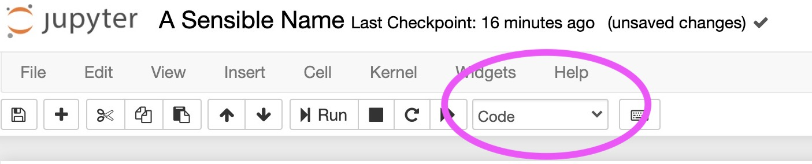

Markdown and Notebooks as Electronic Lab Books#
Questions
What is markdown?
Why would you need a lab book for code?
Objectives
Get started with markdown basics
You can think of your notebook as an electronic lab book. Just as when you’re doing hands-on experiments in the lab, it’s important to keep a record of what you’re doing when you’re working with code. With notebooks you can keep your notes alongside the code.
Notebooks have different types of cells, the main ones being markdown and code. You can write comments in your code cells using # at the start of a line, but it’s not ideal for when you need any more detail than # set this to 7 (or, as most of my code comments say: # don't know why this isn't working....'). Markdown cells let you include text, images, equations etc so you have a proper record of what your code is doing and why.
To change a cell to a markdown cell, click on the arrow next to ‘Code’ at the top of the notebook and select ‘Markdown’
What is markdown?#
If you’ve ever posted on an internet forum, you’ve probably already used markdown, although you may not have realised it!
You can make headings of different sizes using # at the start of a line. # big (#) ## medium (##) ### small (###)
You can make text italic using one * at each end of the text. Bold uses two **.
Making lists is easy too!
bulleted lists
are made by putting
* (asterix) at the start of a line
or maybe
a dash (-)
you don’t even need to be consistent.
Numbered lists
Just by numbering things
i.e. 1., 2., at the start of a line
and it doesn’t matter
if your numbers are in the right order
(The list above was numbered 1, 2, 3, 7, 4)
A nice markdown cheatsheet can be found here
If you want to add an image to a cell, the easiest way is to click ‘Insert Image’ in the ‘Edit’ menu at the top of the notebook.

Adding equations#
You can include equations in markdown cells using LaTeX. LaTeX is a typesetting language that you’ll likely come across when you’re writing lab reports. Some LaTeX stuff can be (overly) complicated, but for now we just care about the LaTeX math environment.
If you want to include an equation on a new line (like you would in a lab report), use two $ signs at the start and end, e.g.:
$$ M = a \log{P} + b $$ will appear as:
If you want to include some maths or a symbol in the middle of your text just use one $ sign, e.g. :
The standard deviation, $\sigma$ is the square root of the variance, $\sqrt{\sigma^2}$ will appear as:
The standard deviation, \(\sigma\) is the square root of the variance, \(\sqrt{\sigma^2}\)
Here is a nice reference sheet for LaTeX maths symbols and operators.
Exercise: Write some markdown
Change the next cell of your notebook to a markdown cell. Give the cell a title and some text to remind your future self what you were doing in this session. Add in your favourite equation. To ‘run’ your markdown cell, either press the ‘Run’ button at the top, or press ‘Shift-Enter’.
Key Points#
Your computing/coding work should be documented in the same way as your lab work
Keep notes on what your code is doing and why it’s doing it. Your future self will thank you when you come to write things up later!